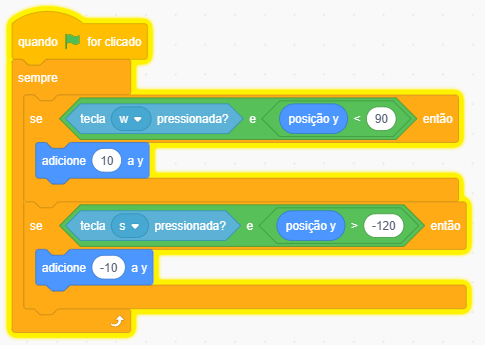
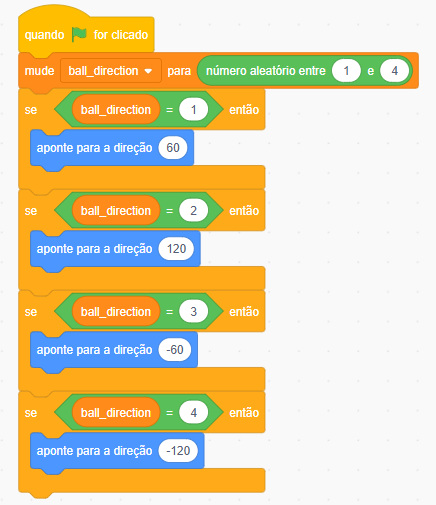
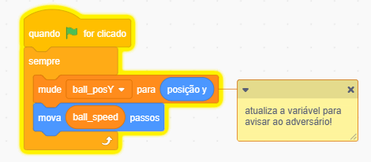

Primeiros Passos
Prepare-se, programador(a)! Hoje nós vamos dar vida ao nosso jogo de Ping-Pong.
Você sabia que o Pong foi um dos primeiros videogames do mundo? Ele foi criado há muito tempo atrás (em 1972!) e é como se fosse uma partida de Ping-Pong ou Tênis de Mesa dentro do computador.
🎮 Como o Pong funciona?
• Temos duas raquetes (uma de cada lado da tela).
• Uma bolinha que fica quicando sem parar.
• O seu objetivo é rebater a bolinha e fazer ela passar da raquete do seu adversário para marcar um ponto!
Carregando os Assets:
Vamos começar escolhendo um cenário para o nosso jogo.
- Cenário: Vá na pasta Assets > Scratch > Pong no computador e carregue cenário.
- Raquete: Agora, escolha um sprite para ser a raquete do jogador (azul) e adversário (vermelho). Defina o tamanho entre 40 e 50 para que fique proporcional.
- Bolinha: Carregue a sprite da bolinha. Defina o tamanho entre 20 e 30 para que fique proporcional.
Programando a Raquete do jogador
-
O Ponto de Partida!
Todo jogo precisa de um começo. Quando clicarmos na bandeira verde, a raquete precisa ir para o seu lugar no campo.
Início do Jogo
quando a bandeira verde for clicada
vá para x: -210 y: 0
-
O Coração do Jogo (O Bloco Sempre)
Como vimos nas aulas anteriores, o computador é muito rápido! Precisamos pedir para ele checar o tempo todo se estamos apertando algum botão. Para isso, usamos o bloco Sempre.
-
Subindo e Descendo!
Como vocês já são feras no eixo Y, sabem muito bem que ele controla o movimento vertical! O truque agora é conectar essa matemática ao nosso teclado.
- Tecla W: Para subir a raquete, precisamos adicionar um número positivo ao eixo Y. Quanto maior o número, mais rápido ela sobe!
- Tecla S: Para descer a raquete, precisamos adicionar um número negativo ao eixo Y. Quanto menor o número, mais rápido ela desce!
Para Subir
se tecla W pressionada? então
adicione 10 a y
Para Descer
se tecla S pressionada? então
adicione -10 a y
A Parede Invisível
Se você testar agora, vai ver que a raquete pode fugir da tela se você segurar o botão! Para resolver isso, usamos o bloco verde "E". Ele cria uma regra dupla: A raquete só sobe SE apertarmos o W E ela ainda não tiver batido no teto!
💡 Dica de Ouro: No nosso código, o "teto" invisível fica na posição Y menor que 90 e o "chão" invisível fica na posição Y maior que -120. Tente mudar esses números no Scratch para ver a mágica (ou a bagunça) acontecer!
Resumo do Código da Raquete:

Dando Vida à Bolinha
Agora que nossa raquete já está pronta, é hora de colocar a bolinha em campo. Mas antes dela começar a quicar loucamente, precisamos organizar a partida definir a velocidade inicial e fazer um "sorteio" de para onde ela vai voar!
Velocidade
O Motorzinho da Bola
Nós precisamos que a bolinha ande para frente infinitamente. Usamos o bloco Sempre para ela atualizar os passos baseados na sua velocidade.
Movimento e GPS
quando a bandeira verde for clicada
sempre
mova (ball_speed) passos
O Sorteio do Saque!
Se a bolinha fosse sempre para o mesmo lado, o jogo ficaria muito fácil de adivinhar. Então o Scratch vai "jogar um dado" de 4 lados para sortear a direção do primeiro chute! Então vamos criar um código para saber onde a bolinha irá apontar.
- Vamos criar uma variável chamada "ball_direction" (direção da bola) para guardar o número sorteado.
Sorteando o Lado
quando a bandeira verde for clicada
mude [ball_direction] para número aleatório entre 1 e 4
-
Apontando para a Diagonal! ↗️↘️
Dependendo do número que foi sorteado (1, 2, 3 ou 4 na caixinha ball_direction), a bolinha vai apontar para um ângulo diferente. Assim o jogador nunca sabe para qual diagonal ela vai voar!
se ball_direction = 1 então
aponte para a direção 60
se ball_direction = 2 então
aponte para a direção 120
se ball_direction = 3 então
aponte para a direção -60
se ball_direction = 4 então
aponte para a direção -120
💡 Dica de Ouro: No Scratch, a direção 90 é reta para a direita e -90 é reta para a esquerda. Ao usar números "quebrados" como 60 ou 120, nós forçamos a bolinha a andar na diagonal!
🕵️♂️ Detetive de Bugs: O Mistério do Bloco "Sempre"
Você percebeu que os blocos azuis "se... então" ficaram de fora de um bloco "sempre"?
Sabe por quê? Se você colocar esses blocos lá dentro, o computador vai forçar a bolinha a apontar para aquela mesma direção o tempo todo, sem parar!
Imagine só: A bolinha bate na sua raquete e tenta quicar para voltar para o campo. Mas o código dentro do sempre grita: "Não! Volte a apontar para a direção do saque!"
O resultado? A bolinha nunca ia conseguir quicar! Ela ia bater na raquete e ficar patinando lá, tentando atravessar a parede. Esses blocos ficam do lado de fora porque eles só servem para dar o "empurrão inicial". Depois disso, a bolinha fica livre para rebater e mudar de direção naturalmente!
Resumo do Código da Bolinha:

O Jogador Adversário (A IA do Jogo)
Você não vai jogar sozinho, né? Chegou a hora de criar a Inteligência Artificial (IA) do jogo! Nós vamos ensinar a raquete do computador a pensar sozinha e a perseguir a bolinha pelo campo.
🧠 Como a IA toma decisões? (O Truque do GPS)
Inteligência Artificial é quando programamos o computador para agir sozinho! Mas para o robô saber para onde ir, ele precisa de "olhos".
- Para a IA funcionar, precisamos criar uma variável para armazenar a posição da bolinha, vamos chama-la de ball_posY!
- Junto do nosso bloco de movimentação da bolinha, vamos atualizar a variável ball_posY a cada frame/passo que ela dá!

Como programar o Robô:
-
Entrando em Campo!
Assim como a sua raquete, o robô também precisa ir para a posição dele quando a bandeira verde for clicada. Só que ele fica do lado direito do campo (X positivo!).
Posição do Inimigo
quando a bandeira verde for clicada
vá para x: 210 y: 0
-
A Perseguição (O Código do Robô) 🏃♂️
O robô usa o bloco Sempre para ficar comparando a posição Y dele com a posição Y da bolinha (o nosso GPS). Veja como ele é inteligente:
Se a Bola estiver Embaixo...
se posição y >
[ball_posY] então
adicione -2 a y
Ele percebe que está muito alto, então ele DESCE (usa o -2).
Se a Bola estiver no Alto...
se posição y <
[ball_posY] então
adicione 2 a y
Ele percebe que está muito baixo, então ele SOBE (usa o 2).
🕹️ O Segredo dos Games: A Fraqueza do Robô
Você reparou que a nossa raquete anda 10 passos por vez, mas o robô só anda 2 passos? Sabe por que fizemos o robô ser mais "lento"?
Se o robô andasse muito rápido, ele alcançaria a bolinha sempre e nunca perderia! Fazer o robô ser um pouco mais devagar garante que, quando a bolinha ficar muito veloz, ele não vai conseguir alcançar e você poderá marcar o gol. É assim que os criadores de jogos ajustam a Dificuldade (Fácil, Médio, Difícil)! Se quiser um desafio maior, tente mudar a velocidade do robô para 3 ou 4!
Desafio!!
Na aula, programamos um sistema onde a bolinha sorteia um número entre 1 e 4 para escolher uma das quatro diagonais iniciais (60, 120, -60, -120).
🎯 O Desafio
Altere o código do "Sorteio do Saque" para que a bolinha possa sair em 6 direções diferentes no início do jogo, em vez de apenas 4.
Você precisará atualizar o sorteio da variável ball_direction para sortear de 1 a 6 e adicionar novos blocos de condição "se... então" com novos ângulos (lembrando de manter números que forcem a bolinha a andar na diagonal, como 45, 135, -45 ou -135).